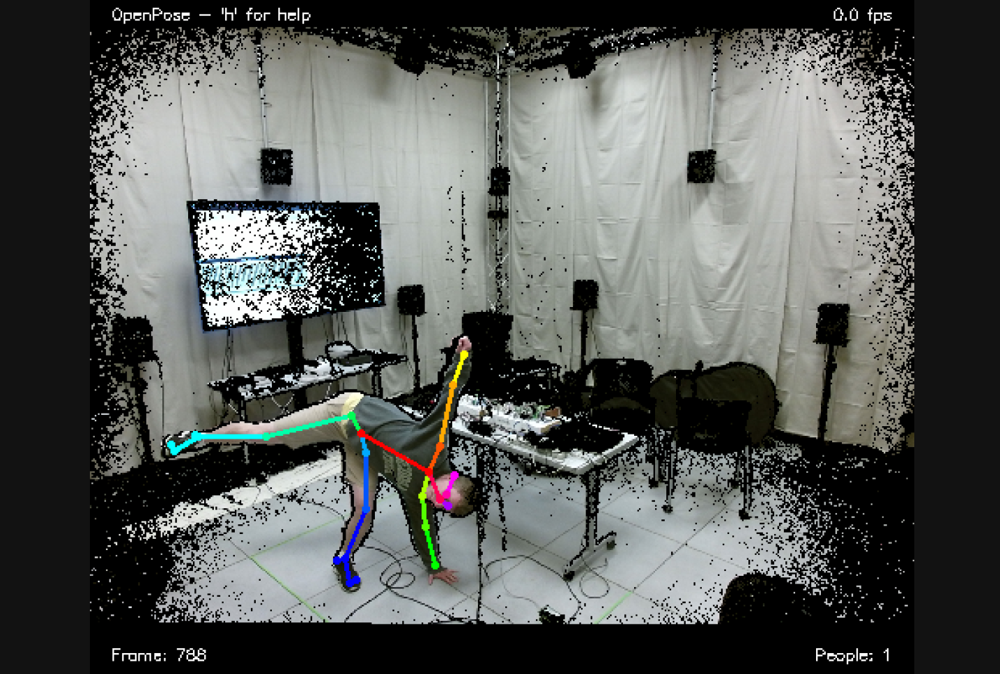
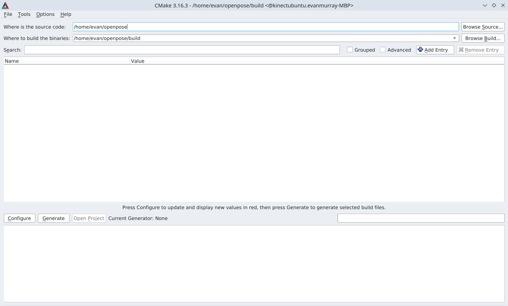
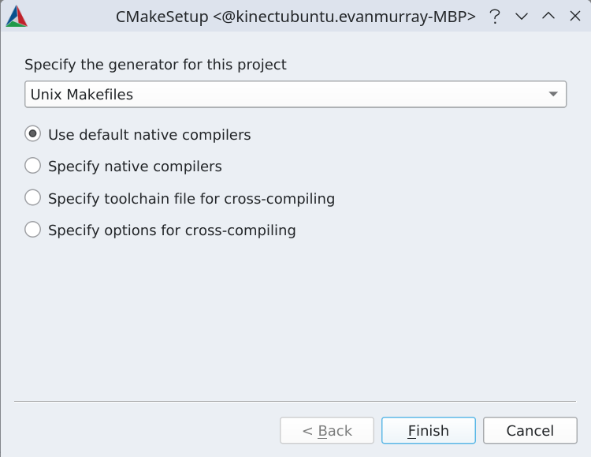
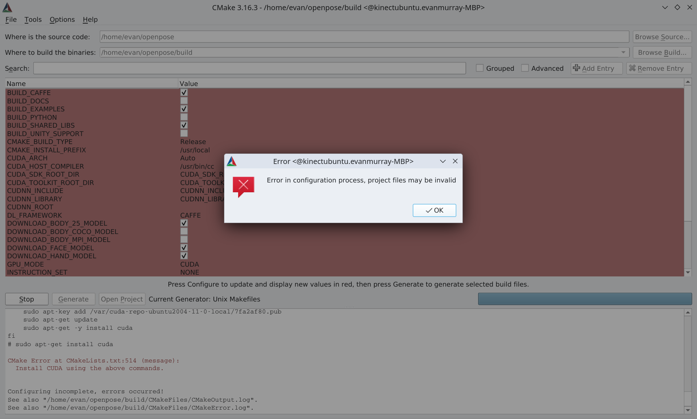
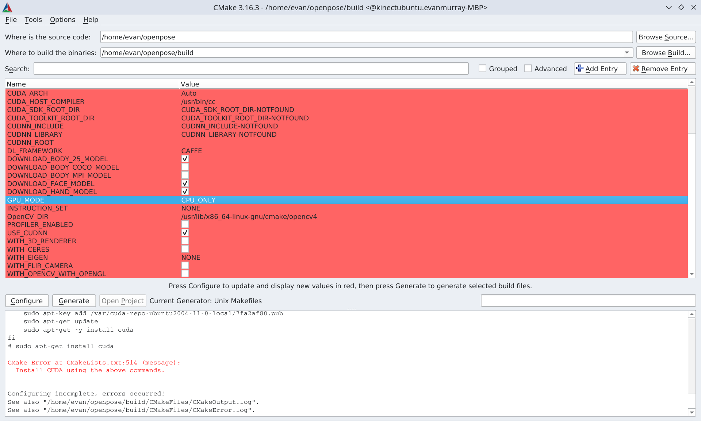

Kinect
Introduction
The Kinect for Xbox 360 (also known as the Kinect v1) was developed by PrimeSense in collaboration with OpenNI. A couple years later, Microsoft began development on the Kinect for Xbox One (also known as the Kinect v2). Additionally, PrimeSense who made the original Kinect was aquired by Apple.
While the Kinect v2 was designed for PC's and the Xbox One, many open-source developers continued the development of the Kinect v2 drivers which still obtain data aquisition via the OpenNI2 drivers. Libfreenect2, a wrapper library, was written for obtaining the RGB and depth data which depends on the OpenNI2 drivers. This library is what the submodule in the Kinect folder points to, and it contains all of the software one needs to control/view data from the Kinect v2 sensor. It does not contain the software which performs pose tracking.
However, because the data retrieved by the OpenNI2 drivers is similar to that of the OpenNI drivers written for the Kinect v1, it is possible to use the old tracking algorithms created by PrimeSense known as NiTE. A future goal of the Spatial Auditory Feedback project is to use open-source pose tracking algorithms, such as OpenPose, MediaPipe, or Skeltrack which was designed specifically for the Kinect v2.
Further exploration and testing is needed here. For now, the installation guide on the next page will cover installing libfreenect2 and the NiTE2.2 shared library.
Installation
Step 1: Update the package list
sudo apt update
Step 2: Install build tools:
sudo apt install build-essential cmake pkg-config
Step 3: Install libusb (for getting the Kinect to talk to the USB ports)
sudo apt install libusb-1.0-0-dev
Step 4: Install graphics libraries (for displaying the camera output from the sensor)
sudo apt install libturbojpeg0-dev libglfw3-dev
Step 5: Install OpenNI2 libraries/tools (they will be needed later for testing and installation of libfreenect2)
sudo apt install libopenni2-dev openni2-utils
Step 6: Clone libfreenect2 and enter the directory
git clone https://github.com/OpenKinect/libfreenect2.git
cd libfreenect2
Step 7: Build and install the libfreenect2 library from source
mkdir build && cd build
cmake .. -DCMAKE_INSTALL_PREFIX=$HOME/freenect2
make
make install
Note: You need to specify cmake -Dfreenect2_DIR=$HOME/freenect2/lib/cmake/freenect2 for CMake based third-party application to find libfreenect2.
Step 8: Install the openni2 library from here
sudo make install-openni2
Step 9: Set up udev rules for device access.
sudo cp ../platform/linux/udev/90-kinect2.rules /etc/udev/rules.d/
Note: If any Kinects were plugged into the USB ports, each one needs to be re-plugged again for the USB to recognize it with the updated rules.
Step 10: Create symbolic links to installed libraries which are missing and required for everything to work.
sudo ln -s /usr/lib/x86_64-linux-gnu/OpenNI2/Drivers/libfreenect2-openni2.so /usr/lib/x86_64-linux-gnu/OpenNI2/Drivers/libFreenectDriver.so
sudo ln -s /usr/lib/x86_64-linux-gnu/OpenNI2/Drivers/libfreenect2-openni2.so.0 /usr/lib/x86_64-linux-gnu/OpenNI2/Drivers/libFreenectDriver.so.0
Note: Remember these paths, and make sure they exist. They will be needed when we run the NiTE tracker in the next steps below. See: https://github.com/OpenKinect/libfreenect2/issues/639 for more context.
Programs
Prelude
There are a couple items to complete before having fun with the Kinect sensors. Some of these you may need to do every time you boot the system. Others may be a one-time checklist item.
- Run
lsusband make sure each Kinect is attached to a bus which is on a USB 3.0 root controller. USB 3.0 is required for the Kinect Xbox One (Kinect v2) - Download and unzip the NiTE tracking library by PrimeSense archived here: https://bitbucket.org/kaorun55/openni-2.2/src/2f54272802bfd24ca32f03327fbabaf85ac4a5c4/NITE%202.2%20%CE%B1/?at=master. Rich 133B has a 64-bit Linux system, so it should be the x64-Linux one.
- Remember the last note about those paths? This is where they are needed. Open the file located in the downloaded NiTE package as described below:
cd ~/Downloads/NiTE-Linux-x64-2.2/Samples/Bin
sudo nano OpenNI.ini
-
Uncomment the line ';Repository=OpenNI2/Drivers' by removing the ';' and set repository to the path. It should look something like this:
Repository=/usr/lib/x86_64-linux-gnu/OpenNI2/Drivers. Save the file and exit. -
Set the UBFS buffer size to 32MB (this one is required on every boot). Otherwise libusb will not have enough memory, as the default on system boot is 16MB. Each Kinect v2 sensor uses 16MB which adds up to 32MB total. Read this guide for more info on how to calculate the memory: Understanding USBFS on Linux.
sudo sh -c 'echo 32 > /sys/module/usbcore/parameters/usbfs_memory_mb'
Fun Stuff
Now any of the OpenNI2, libfreenect2, and NiTE programs should be able to run with the Kinects! The OpenNI2 programs should be in your path.
- The OpenNI2 programs are listed in https://github.com/OpenNI/OpenNI2/tree/master/Samples
- The libfreenect2 program is in
/path/to/libfreenect2/build/bin/. It can be run via./path/to/libfreenect2/build/bin/Protonect. - The NiTE programs are in
/path/to/NiTE-Linux-x64-2.2/Samples/Bin. The one which shows the tracked skeleton is calledUserViewerand can be run via./path/to/NiTE-Linux-x64-2.2/Samples/Bin/UserViewer. Note this program was intended for the original Kinect v1 sensor, so it doesn't perform optimally with the Kinect v2 sensors due to the down-scaled resolution. Further investigation on an alternative skeleton tracking method is in progress.
OpenPose

The real question is what new solutions are out there for skeleton tracking using the Kinectv2 sensor? The following tutorial will guide you through installing a Kinect v2 compatible solution for Carnegie Mellon University's library for skeleton tracking called OpenPose.
Distrobox Installation
Many of the packages used for the Kinect are not supported on later distro versions anymore, so it would be nice to setup some sort of container which can hold and run our work. This is the perfect job for Docker, a package which allows the containerization of a Ubuntu image -- or pretty much any Linux distro for that matter. Docker has a nice wrapper which makes the job even easier called Distrobox. It can be installed with aptitude via the following command:
sudo apt install distrobox
A container can be created with a name and an image in a registry, such as the docker.io registry. Example url: docker.io/barebuild/ubuntu:14.04. In this installation, we will use the official Ubuntu 20.04 distro which is the latest compatible distro for this installation. Then we can give the container a name we will remember for our use case, such as kinectubuntu.
distrobox create --name kinectubuntu --image ubuntu:20.04
Then you can enter the container you created using:
distrobox enter kinectubuntu
After this command, you should see something like this:
evan@evanmurray-MBP:~$ distrobox enter kinectubuntu
Starting container... [ OK ]
Installing basic packages... [ OK ]
Setting up devpts mounts... [ OK ]
Setting up read-only mounts... [ OK ]
Setting up read-write mounts... [ OK ]
Setting up host's sockets integration... [ OK ]
Integrating host's themes, icons, fonts... [ OK ]
Setting up package manager exceptions... [ OK ]
Setting up package manager hooks... [ OK ]
Setting up dpkg exceptions... [ OK ]
Setting up apt hooks... [ OK ]
Setting up distrobox profile... [ OK ]
Setting up sudo... [ OK ]
Setting up user groups... [ OK ]
Setting up kerberos integration... [ OK ]
Setting up user's group list... [ OK ]
Setting up user home... [ OK ]
Ensuring user's access... [ OK ]
Container Setup Complete!
evan@kinectubuntu:~$
Notice how now the hostname is the name of the container. You should now install this package, as it will be needed later. You can also use it to verify the version of Ubuntu.
evan@kinectubuntu:~$ sudo apt install lsb-release
evan@kinectubuntu:~$ lsb_release -a
No LSB modules are available.
Distributor ID: Ubuntu
Description: Ubuntu 20.04.6 LTS
Release: 20.04
Codename: focal
evan@kinectubuntu:~$
You'll also want to install nano and git. Nano can be used as a text editor, and git can be used for cloning some required repositories for this installation.
sudo apt install nano git
OpenPose installation
First, you'll want to install the OpenCV development libraries and create a symlink for opencv2 to find opencv4.
sudo apt install libopencv-dev
sudo ln -s /usr/include/opencv4/opencv2 /usr/include/opencv2
You'll also want to install the CMake GUI built with Qt to build the OpenPose project.
sudo apt install cmake-qt-gui
Then, since the Caffe machine learning models with the default version of OpenPose have issues, you can clone this fork to install them correctly. We'll also want to initialize the submodules.
git clone https://github.com/AlecDusheck/openpose.git
cd openpose
git submodule update --init --recursive --remote
Now that we've cloned the repo, you can run this script to install the OpenPose dependencies:
sudo bash ./scripts/ubuntu/install_deps.sh
Then create the build directory, go to it, and run configure to download the Caffe models.
mkdir build
cd build
cmake-gui ..
A window should pop up which looks like this. Make sure the source folder is set to the root of OpenPose and the build folder is set to the build folder you just created.

Now click the Configure button and make sure the generator is set to "Unix Makefiles".

Don't worry, once you run this step--configure should fail for the first time.

This is because we haven't specified how to install CUDA yet. This will be covered in a later tutorial. For now, you can set the GPU_MODE flag to CPU_ONLY as below:

Now run configure again to download the Caffe models. You should see "Configuring done" at the bottom of the console when it completes.
Now navigate to the root of your OpenPose folder and go to the models folder. Copy the three files located there to a convenient place, as they will be needed later:
/home/evan/openpose/models/pose/body_25/pose_iter_584000.caffemodel
/home/evan/openpose/models/hand/pose_iter_102000.caffemodel
/home/evan/openpose/models/face/pose_iter_116000.caffemodel
Now, delete your OpenPose folder. This may seem counter-intuitive, but you'll see why. Clone the OpenPose from the official CMU repo:
git clone https://github.com/CMU-Perceptual-Computing-Lab/openpose.git
Now you should checkout version 1.7.0, as this is the latest supported version by another tool we will use.
cd openpose
git checkout tags/v1.7.0
Now, follow the same steps we followed for the previous OpenPose repo. On the second CMake configure, you will get another error.
CMake Error at cmake/Utils.cmake:8 (file):
file DOWNLOAD HASH mismatch
for file: [/home/evan/openpose/models/pose/body_25/pose_iter_584000.caffemodel]
expected hash: [78287b57cf85fa89c03f1393d368e5b7]
actual hash: [d41d8cd98f00b204e9800998ecf8427e]
status: [7;"Couldn't connect to server"]
Call Stack (most recent call first):
CMakeLists.txt:994 (download_model)
This is why we used the other repo to download the models. Now locate those models, and copy each one to the correct directory to replace the existing model file there (which should be 0B in size since it failed to download). Once that's done, run configure again, and it should successfully complete this time. Now click the "Generate" button to generate the build files.
Now run this make command to make OpenPose:
make -j`nproc`
Then run this to install the library on the system:
sudo make install
ROS Installation
First, add this source to your sources file to download the ROS packages:
sudo sh -c 'echo "deb http://packages.ros.org/ros/ubuntu $(lsb_release -sc) main" > /etc/apt/sources.list.d/ros-latest.list'
Then add it to your keys:
curl -s https://raw.githubusercontent.com/ros/rosdistro/master/ros.asc | sudo apt-key add -
Now update your package index:
sudo apt update
Now install ROS noetic:
sudo apt install ros-noetic-desktop-full
Now activate the ROS environment:
source /opt/ros/noetic/setup.bash
Install and initialize ROS dependencies
sudo apt install python3-rosdep python3-rosinstall python3-rosinstall-generator python3-wstool build-essential
sudo apt install python3-rosdep
sudo rosdep init
rosdep update
Now create and initialize catkin workspace via the following commands:
mkdir -p ~/catkin_ws/src
cd ~/catkin_ws/
catkin_make
source devel/setup.bash
Copy the contents of this script and paste it in a file called fix_cpp.py to fix the CMake files later: https://gist.githubusercontent.com/Meltwin/1ee35296d2bb86fee19d639580e3c91f/raw/13b8d626733981cdf58244708e5cba1ee5d87e1c/change_cpp.py
sudo nano fix_cpp.py
Kinect Bridge Installation
If you've followed the steps above, you should already have libfreenect2 installed. However, you may want to re-install it in the container since some of the dependencies won't be installed. You can do so by removing the libfreenect2 and freenect2 folders and re-following the installation steps inside the container. You can skip step 9 since the container looks to the host for usb devices. You can also skip step 10 since it's already been done, and again the container relies on the host system for these libraries.
Go to the src directory and clone the kinect bridge repo there:
cd src
git clone https://github.com/code-iai/iai_kinect2.git
Go to the repo directory and install all the ROS dependencies.
cd iai_kinect2
rosdep install -r --from-paths .
Temporarily move the CMakeLists.txt file at the root of src directory somewhere else, and run the fix_cpp.py script at the root of the workspace.
cd ~/catkin_ws
python3 fix_cpp.py
You should see something like this:
evan@kinectubuntu:~/catkin_ws$ python3 fix_cpp.py
┏━━━━━━━━━━━━━━━━━━━━━━━━━━━━━━━━━━━━━━━━━━━━━━━━━━━━━━━━━━━━━━━━━━━━━━━━━━━━━━━━━━━━━━━━━━━━━━━━━━━━┓
┃ CMakeLists to C++17 Utils ┃
┃ Meltwin - 2023 ┃
┗━━━━━━━━━━━━━━━━━━━━━━━━━━━━━━━━━━━━━━━━━━━━━━━━━━━━━━━━━━━━━━━━━━━━━━━━━━━━━━━━━━━━━━━━━━━━━━━━━━━━┛
▷ Found ./src/iai_kinect2/iai_kinect2/CMakeLists.txt Nothing to change
▷ Found ./src/iai_kinect2/kinect2_calibration/CMakeLists.txt Fixed !
▷ Found ./src/iai_kinect2/kinect2_bridge/CMakeLists.txt Fixed !
▷ Found ./src/iai_kinect2/kinect2_viewer/CMakeLists.txt Fixed !
▷ Found ./src/iai_kinect2/kinect2_registration/CMakeLists.txt Fixed !
evan@kinectubuntu:~/catkin_ws$
Next, move the CMakeLists.txt back and build the package via the following command:
catkin_make -DCMAKE_BUILD_TYPE="Release"
You'll get a bunch of errors, but don't worry. We will fix them now. Do the following:
- Open up the file(s) where the error occurs
- Replace all occurences of
CV_IMWRITE_PNG_COMPRESSIONwithcv::IMWRITE_PNG_COMPRESSION - Replace all occurences of
CV_IMWRITE_JPEG_QUALITYwithcv::IMWRITE_JPEG_QUALITY - Replace all occurences of
CV_IMWRITE_PNG_STRATEGYwithcv::IMWRITE_PNG_STRATEGY - Replace all occurences of
CV_IMWRITE_PNG_STRATEGY_RLEwithcv::IMWRITE_PNG_STRATEGY_RLE - Replace all occurences of
CV_BGRA2BGRwithcv::COLOR_BGRA2BGR - Replace all occurences of
CV_RGBA2BGRwithcv::COLOR_RGBA2BGR - Replace all occurences of
CV_BGR2GRAYwithcv::COLOR_BGR2GRAY - Replace all occurences of
CV_AAwithcv::LINE_AA
Now save all the files, run the command again, and it should build successfully!
ROS OpenPose Installation
Go back to the src folder of the catkin workspace and clone another repo.
cd src
git clone https://github.com/ravijo/ros_openpose.git
Go to the repo directory and install all the ROS dependencies.
cd ros_openpose
rosdep install -r --from-paths .
Temporarily move the CMakeLists.txt file at the root of src directory somewhere else, and run the fix_cpp.py script at the root of the workspace.
cd ~/catkin_ws
python3 fix_cpp.py
You should see something like this:
evan@kinectubuntu:~/catkin_ws$ python3 fix_cpp.py
┏━━━━━━━━━━━━━━━━━━━━━━━━━━━━━━━━━━━━━━━━━━━━━━━━━━━━━━━━━━━━━━━━━━━━━━━━━━━━━━━━━━━━━━━━━━━━━━━━━━━━┓
┃ CMakeLists to C++17 Utils ┃
┃ Meltwin - 2023 ┃
┗━━━━━━━━━━━━━━━━━━━━━━━━━━━━━━━━━━━━━━━━━━━━━━━━━━━━━━━━━━━━━━━━━━━━━━━━━━━━━━━━━━━━━━━━━━━━━━━━━━━━┛
▷ Found ./src/iai_kinect2/iai_kinect2/CMakeLists.txt Nothing to change
▷ Found ./src/iai_kinect2/kinect2_calibration/CMakeLists.txt Nothing to change
▷ Found ./src/iai_kinect2/kinect2_bridge/CMakeLists.txt Nothing to change
▷ Found ./src/iai_kinect2/kinect2_viewer/CMakeLists.txt Nothing to change
▷ Found ./src/iai_kinect2/kinect2_registration/CMakeLists.txt Nothing to change
▷ Found ./src/ros_openpose/CMakeLists.txt Fixed !
evan@kinectubuntu:~/catkin_ws$
Now move the CMakeLists.txt file back and run the make command at the root of the workspace to build the package.
catkin_make
Next, go to the scripts folder of the ros openpose and make all the files executable.
roscd ros_openpose/scripts
chmod +x *.py
Now, install this python package to allow the visualizer to correctly work.
sudo apt install python-is-python3
Make sure the kinects are connected to the computer and run this command to launch the visualizer:
roslaunch ros_openpose run.launch camera:=kinect
Uninstalling OpenPose
Since we installed everything in the Distrobox container, this is fairly simple.
Step 1 is to remove all of the folders you git cloned for the project.
cd ~
sudo rm -r catkin_ws
sudo rm -r openpose
sudo rm -r libfreenect2
sudo rm -r freenect2
Then, exit the container via the logout command. It should look something like this.
evan@kinectubuntu:~$ logout
evan@evanmurray-MBP:~$
Notice how now the host has changed back to our actual hostname. You can now stop the container and remove it.
distrobox stop kinectubuntu
distrobox rm kinectubuntu